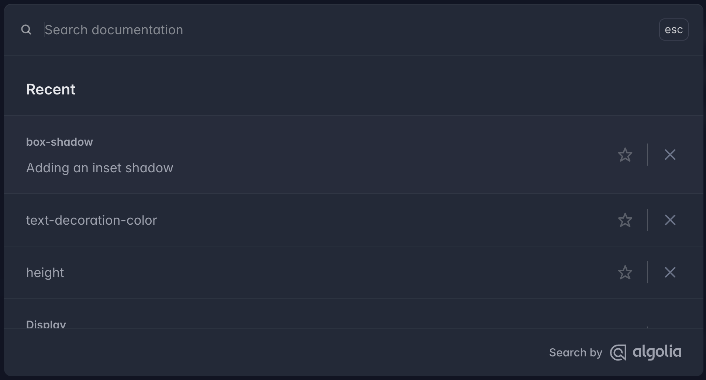
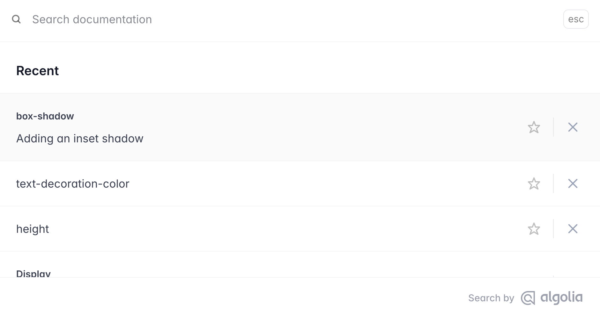

Search Made For Documentation
DocSearch by Algolia makes your docs and blogs instantly searchable—for free.
Already trusted by your favorite docs
Join 7,000+ projects finding answers in milliseconds
Solve docs challenges with a search engine
Docs are only helpful when your users can find answers easily. Enter DocSearch.

Made for docs
DocSearch is purpose-built to index and surface technical content, from API references to how-tos. It understands code snippets, tables, and markdown structures so your users get pinpoint answers every time.

AI-powered
Leveraging Algolia Ask AI, DocSearch interprets natural-language queries, suggests synonyms, and ranks results by relevance. It turns even complex developer questions into instant, context-aware answers.

Powered by Algolia
Built & deployed on Algolia’s global search infrastructure, DocSearch delivers sub-20 ms replies at any scale. Enjoy 99.99% uptime and auto-scaled capacity without lifting a finger—your docs stay lightning-fast, always.


Customizable
Tailor DocSearch to match your brand and UX needs—colors, fonts, layouts, and even search behaviors are under your control. Drop-in CSS variables and simple JS hooks make it effortless to blend search seamlessly into any docs site.

A11y
DocSearch follows WAI-ARIA best practices to ensure full keyboard, screen-reader, and voice-control support. Delight every user with an inclusive search experience that’s tested against WCAG 2.1 standards.
Expand your Docs beyond the search box
Power your documentation with AI
Get instant, AI-powered answers from your documentation. Ask natural language questions and receive accurate, context-aware responses.
Connect your documentation to AI assistants like Claude and Cursor with the Model Context Protocol.

with DocSearch